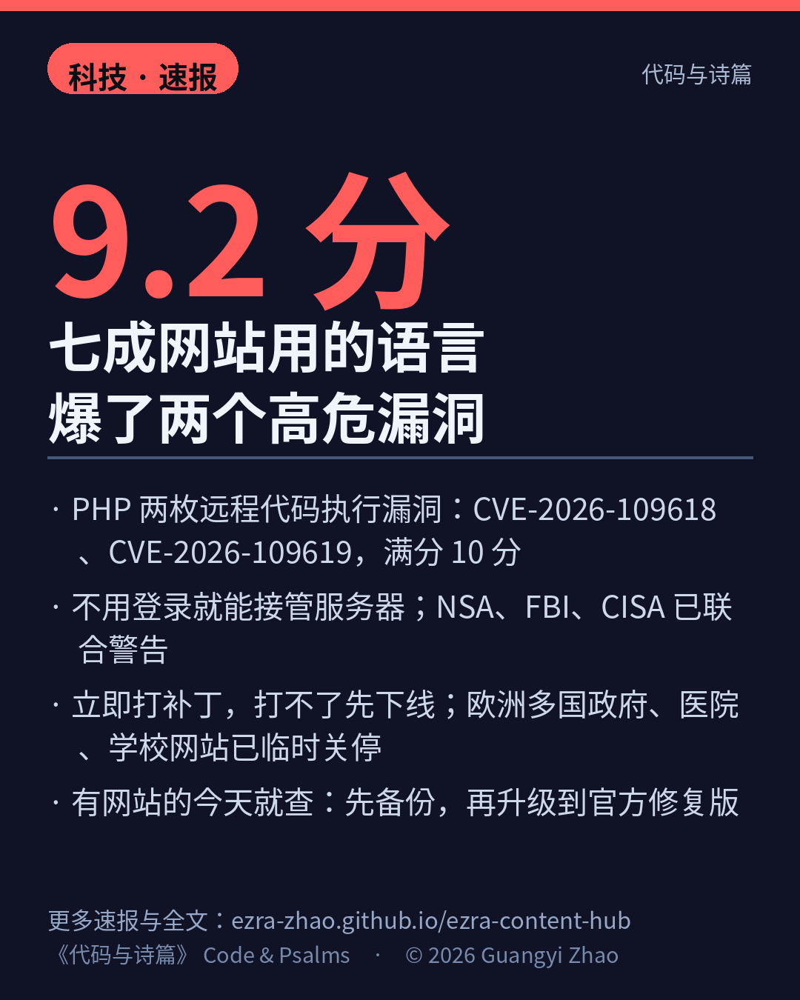

七成网站用的语言，爆了两个 9.2 分的洞。
PHP 核心两枚远程代码执行漏洞：CVE-2026-109618、CVE-2026-109619，CVSS 9.2 分（满分 10）。攻击者不用登录就能接管服务器。
NSA、FBI、CISA 10 月 21 号联合警告：立即打补丁，打不了就先下线。欧洲多国政府、医院、学校网站已临时关停。
有网站的今天就查：PHP 版本、官方修复版、先备份再升级。升不了的，先关站，别裸奔。
来源：se daily 报道 · cryptonews 报道
数字证据说明：CVE 编号、CVSS 与机构警告 A 级（多家报道引原帖交叉）；攻击尝试量与 PHP 占比为 B 级转述口径。
以上为《代码与诗篇》速报。播报版将于分发通道就绪后发布。© 2026 Guangyi Zhao